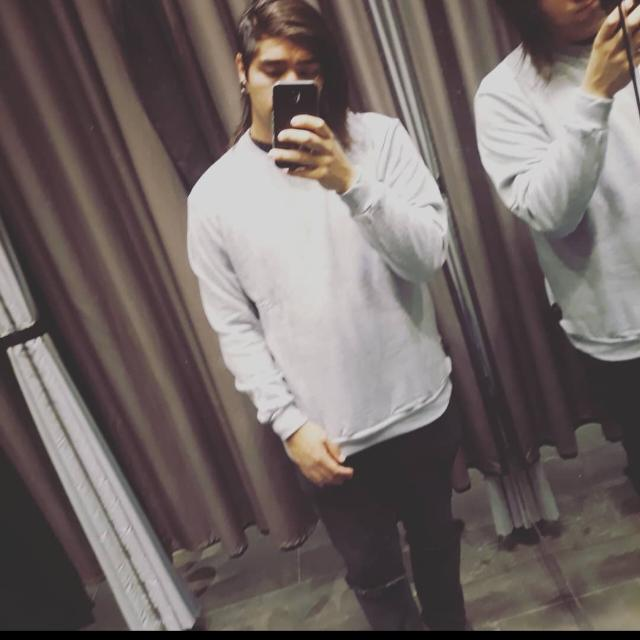

Curriculum Vitae

Angello orrego
Descripcion:
Angello es un joven de 24 años que vive en la comuna de Ñuñoa en Santiago que en la actualidad esta cursando el curso de desarrollador full stack java en desafio latam, ademas de esto trabaja en un restaurant de Mc Donalds y en sus tiempos libres disfruta de ver peliculas, series y hacer deporte entre estos su amado basketball y powerlifting
Datos personales:
- Nombre:Angello Orrego
- Edad: 24 años
- Estado civil: Soltero
- Nacionalidad: Chileno
Formacion:
- Estudios:Enseñansa basica y media completa en Liceo de Aplicacion A-9
- Eduacion superior:4 años de pedagogia en historia en la universidad Alberto Hurtado (carrera incompleta) 2 años de Analista programador en Inacap (carrera en curso)
- Practica profesional de analista programador en curso en la empresa Gudhar
Contactos
- Telefono:+56978118918
- Correo: Angello.bor@gmail.com
- Instagram: @tan_solo_abor
perfil de contacto